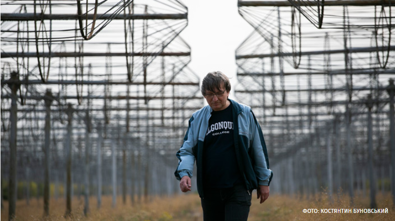

Кабмін призначив нового
керівника Державної митної
служби
керівника Державної митної
служби
Вільна економічна зона на Донбасі
допоможе завершити війну –
Зеленський
допоможе завершити війну –
Зеленський
Зеленський про Кернеса та інших
мерів: Через них загинула велика
кількість людей
мерів: Через них загинула велика
кількість людей
"Динамо" Київ може збанкрутувати через борг перед "Приватбанком" – ЗМІ
У керівництві ОП найбільше заробляє призначений ще Порошенком “фахівець з реформ”
Вона унікальна: Зеленський розповів про українську вакцину від COVID-19
Усі новини...

Національне надбання під Харковом. Як працює найбільший в світі
радіотелескоп низькочастотних хвиль
радіотелескоп низькочастотних хвиль
Політика - Дмитро Кузубов